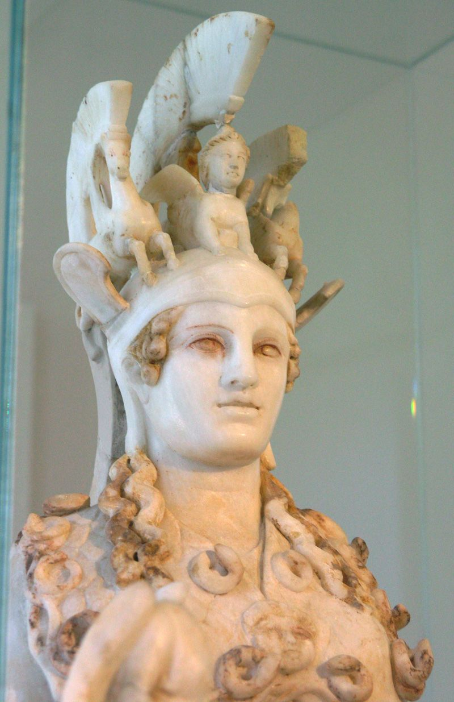

Goddess of Wisdom, Strategic War and Craft, Guardian of the City

The Varvakeion Athena (detail of the triple-crested helmet), Roman marble copy of Phidias's Athena Parthenos, 2nd–3rd century CE — National Archaeological Museum, Athens
Athena is the goddess of wisdom, strategic warfare and craft: the force that governs skill under pressure, and the intelligence that plans a war rather than merely fights one. She was born already an adult and already armed, springing fully grown in gleaming armour from the split skull of Zeus after he swallowed her mother Metis whole to forestall a prophesied usurper. That origin is the character in miniature: she is the offspring of cunning intelligence (metis, the very Greek word for shrewd counsel) absorbed into, and issuing forth from, sovereign power, entirely her father's and entirely her own. Patron of Athens, the city that took her name and built her temple on its highest rock, she is the goddess of the polis as a made thing: law, craft, strategy, the loom and the shipyard and the council chamber all under one authority. Where Ares is war as appetite, Athena is war as calculation: she does not love the fight, she wins it, and extends the same cool competence to weaving, shipbuilding, statecraft and the raising of heroes. Intelligence, in her, is not an ornament to power. It is the weapon and the discipline both.
The MythsHesiod's Theogony gives the essential sequence, though the birth itself happens off the page. Zeus took Metis, a Titaness whose name means cunning intelligence, as his first wife, then swallowed her whole on learning she was destined to bear a son who would overthrow him (886–900). Metis, already pregnant with a daughter, did not die but continued forging counsel inside him; Hesiod later notes only that Athena "sprang from his head" (924–926), fully armed, without describing the moment itself. That gap was filled by other sources, most memorably Pindar (Olympian 7), who has Hephaestus split Zeus's skull with an axe to let her out, at which point she leaps forth in full armour, shouting a war-cry that shakes heaven and earth. She is thus doubly her father's: daughter of the intelligence he consumed, and the child delivered by force from his own body. No mother raised her, no childhood softened her. She arrives complete, which is exactly the point: Athena is wisdom and strategy as something that does not develop by trial and error but is simply, fully, there.
Herodotus (8.55) and later Apollodorus record the contest between Athena and Poseidon for patronage of the city that would bear one of their names. Poseidon struck the Acropolis rock with his trident and produced a spring, or in some versions a horse: a gift of power and utility. Athena planted an olive tree. The assembled citizens, or in some versions a jury of the gods, judged the olive more valuable: food, oil, wood, a durable and civilising gift over Poseidon's raw display, and the city took Athena's name. Poseidon's fury at the loss simmers through several later myths involving Athens and its allies (his own side of the story is told on his page). The contest is often read as a founding statement of what the polis chooses to value: not force projected once, but a slow, tended, renewable resource, which is precisely Athena's register.
Ovid tells the fullest version, in the Metamorphoses (Book 6), a Roman-era source and worth flagging as considerably later than the Greek material above. Arachne, a mortal weaver of extraordinary skill, boasted that her work surpassed the goddess's own and refused to credit Athena with her talent. Athena, disguised as an old woman, warned her and was rebuffed; the two then wove in competition. Athena's tapestry showed the gods in their dignity and the punishment of mortals who had rivalled them; Arachne's showed the gods in their worst infidelities and abuses, Zeus among them, woven, Ovid says, without a single flaw. Athena could find no fault with the work and, provoked less by the skill than by the audacity of the subject, tore it apart and struck Arachne, who hanged herself in shame; Athena loosened the rope and transformed her into the first spider, condemned to weave forever. It is one of the harder myths to sit comfortably with: talent alone, without deference to the order that permits it, meets a punishment out of all proportion, and Athena, patron of craft, is also the one who cannot let a mortal craftsman outgrow her.
Two traditions sit side by side here. Ovid (Metamorphoses 4.794–803) tells that Medusa was once a beautiful woman, assaulted by Poseidon in Athena's own temple, and that Athena, unable to punish the god, punished the victim instead, turning her hair to serpents. Apollodorus gives an older and less psychologically loaded frame, in which Medusa is simply one of the Gorgons, monstrous from the start. What both traditions agree on is what follows: Athena guides Perseus through the ordeal of killing her, lending him a polished bronze shield to view the Gorgon's reflection safely and advising him throughout, and afterwards takes Medusa's severed head and mounts it at the centre of her aegis, the fringed goatskin shield or breastplate that becomes her standing attribute. The gorgoneion, that staring, serpent-haired face, turns onlookers to stone; Athena wears the very horror she is sometimes blamed for creating as her own protection, a piece of iconography as psychologically loaded as any in Greek myth.
Athena's most sustained relationship with any mortal is with Odysseus in the Odyssey, and it is unlike her connection to any other hero. She does not simply grant favours; she partners. She appears to him in disguise on Ithaca, plans strategy with him for the slaughter of the suitors, disguises him as a beggar, and in Book 13 the two sit together under an olive tree, her own tree, and openly admit to each other how alike they are: both patient, both devious, both players of the long game. She tells him, delighted rather than offended, that anyone who would out-scheme him would have to be cunning indeed. It is the closest thing in Greek epic to a working partnership between a god and a mortal built on shared temperament rather than mere patronage, and it makes Odysseus the clearest mortal expression of the Athena pattern: intelligence as survival, patience as strength, the long way round preferred to the short violent one.
Epithets and DomainsHer aspect at the Parthenon, her great temple on the Acropolis, home to Phidias's colossal chryselephantine cult statue. Virginity here reads as inviolate wholeness, not merely marital status.
Her oldest Athenian cult, guardian of the polis itself, honoured with the ancient olive-wood statue kept in the Erechtheion and central to the Panathenaic festival.
The front-line defender. Phidias's colossal bronze Athena Promachos stood in the open air of the Acropolis, its spear-tip reputedly visible to sailors rounding Cape Sounion.
Patron of craftsmen and craftswomen, potters, weavers and metalworkers, invoked wherever skilled hands make something.
Worshipped at her own small temple on the Acropolis bastion. Victory here is Athena's considered gift, not a separate power beyond her control; the temple's cult statue, Athena Apteros ("wingless victory"), shows victory that cannot fly away.
Her standing Homeric epithet, used throughout the Iliad and Odyssey. It ties her to the little owl that became her sacred bird and to the piercing, unblinking clarity of her gaze.
Patron of the deliberative council, invoked at the opening of civic business: the political register of her wisdom.
Attested on the Acropolis alongside Athena Polias, worshipped for bodily wellbeing, an aspect that sits oddly with her armed image until one remembers that health, too, is a discipline maintained by skill and care.
Worshipped at Corinth (Pausanias 2.4.1). She gave Bellerophon the golden bridle that let him tame Pegasus: wisdom as the taming of a wild power rather than its destruction.
Athena is the archetype of strategic intelligence: mind armoured, aimed and in service of an order larger than itself. Jean Shinoda Bolen, in Goddesses in Everywoman, names her the father's daughter: the woman (or the function in any psyche) that thrives in institutions, thinks in systems, allies naturally with competent authority and is genuinely puzzled by people who lead with feeling. Her birth is the archetype's diagram. Wisdom (Metis) is swallowed by power (Zeus), and what emerges is intelligence born fully armed from the head: brilliant, defended, and, the myths quietly insist, motherless. Jungian writers read her as the thinking function personified, and her virginity less as chastity than as inviolability: a mind that nothing penetrates unless it chooses.
The light expression is formidable and genuinely likeable. Athena consciousness is craft as much as strategy (Ergane, the workers' goddess, is as central as Promachos the fighter): it makes things well, plans several moves out, and keeps its head precisely where others lose theirs. Its signature gift is the working partnership, the Athena-Odysseus relationship, the closest thing Greek epic has to collegial love: the mentor who delights in a protégé's cunning, backs them at the decisive moment, and asks for excellence rather than worship. In a leader it is the calm in the storm; in a team it is the person whose plan survives contact with reality because reality was consulted first.
The shadow wears the Gorgon on its chest. Athena carries Medusa's petrifying head as armour, and the image is exact: rage and woundedness not felt but worn, turned outward as the power to freeze others while the wearer stays untouched. The Arachne story names the institutional shadow with uncomfortable precision: the weaver's tapestry told the truth about the gods' abuses, and flawlessly, and Athena destroyed her for it. The strategist in service of an order punishes the truth-teller who embarrasses that order, and calls it standards. Add the father's-daughter blindness (in Aeschylus's Eumenides she casts the deciding vote for Orestes with the words that no mother bore her), and the shadow resolves into one pattern: identification with power so complete that the feminine ground of her own story, the swallowed mother, is unreachable. The developmental work is disarmament: feeling what the armour was for.
In Modern LifeAthena is the presiding archetype of professional excellence, and modern institutions run on her. She is the general counsel, the chief of staff, the principal engineer, the McKinsey partner, the woman who rose in a male institution by being unarguably better and never once bleeding in public. She is also, importantly, not gendered in practice: the Athena pattern turns up in anyone whose first loyalty is to competence and whose first language is analysis.
At their best, Athena people are the ones you want in the room when it matters: unflappable, prepared, strategic, and generous mentors to anyone who shows craft. Their partnerships of choice are Odyssean, mutual respect between sharp minds, and their standards genuinely lift institutions. In coaching, the growth areas are as consistent as the gifts. The armour does not come off at home, and partners and children get the strategist when they needed the person. Feeling is treated as data corruption rather than data, and often surfaces only as (worn, not felt) coldness that others experience as petrifying. And the Arachne test is worth running honestly: when a junior person is right in a way that embarrasses the institution, what happens to them? The shadow Athena destroys them with process; the light Athena hires them.
Organisationally, the pattern's blind spot is legitimacy-worship: the father's daughter defends the structure past the point where the structure deserves it, and is reliably the last to see institutional rot because seeing it would orphan her twice. The deepest coaching question for a strong Athena is Metis: what wisdom got swallowed so that this brilliance could be born, and what would it mean to go looking for the mother?
CorrespondencesNone in the Greek system. The asteroid Pallas (discovered 1802) carries her name by modern astronomical convention; astrological use is modern.
The third is associated with her in the Athenian calendar, and her epithet Tritogeneia was sometimes read in antiquity as "third-born". The epithet's real meaning was disputed even then; treat the day with mild confidence.
Grey (her Homeric eyes), gold, olive green. Modern convention: no colour is securely attested in cult, though her great statue was gold and ivory.
The aegis with the Gorgon's head, the helmet and spear, the owl, the olive tree, the loom and distaff, the ship (she guided the building of the Argo).
The owl above all, stamped on Athens's coins beside her head for centuries (the "owls" were the ancient world's most trusted currency). The snake: her Parthenos statue had one coiled inside the shield, and the earth-born Erichthonius was half serpent.
The olive, definitively and almost exclusively hers: her gift in the contest for Athens, and the sacred moriai olives of Attica were legally protected as her property. Herodotus (8.55) reports the burnt Acropolis olive putting out a new shoot within a day of the Persian sack. Beyond the olive, plant lists are modern convention.
Olive oil (the prize amphorae of the Panathenaic games were filled with her sacred oil), cakes, cows at the great Panathenaic hecatomb, and, uniquely, the peplos: a robe woven over nine months by chosen Athenian women and girls and presented to her statue at the Great Panathenaia. The principle generalises well to modern practice: for Ergane, made things are the offering.
The Panathenaia, Athens's greatest festival, with its procession, games and peplos; the Chalkeia, the bronze-workers' festival she shared with Hephaestus; the Plynteria, when her ancient image was undressed and washed and the city held its breath (an unlucky day for business); the Arrhephoria, the girls' secret basket-carrying rite.
The Athenian Acropolis (Parthenon, Erechtheion, the Promachos bronze); Athena Alea at Tegea (Pausanias 8.45); Athena Chalkioikos, "of the bronze house", at Sparta; Lindos on Rhodes.
She kept no oracle; her divination is judgement itself. The owl seen at the right moment was read as her omen, most famously before battles, but this is anecdote rather than institution.
For practice, her most distinctive ancient offering is the one modern devotion overlooks: work. The peplos took nine months of skilled weaving by dedicated hands; the Panathenaic oil was the fruit of her own trees; the Chalkeia belonged to smiths honouring her with their craft. Athena Ergane accepts the made thing, and a practice addressed to her plausibly counts disciplined, excellent work (a thing genuinely well made, whether object, plan or text) as the offering itself. She is also the natural patron of divination's analytic half: not the receiving of the sign, which is Hermes' and Apollo's, but the reading of it.
Zeus and Metis, the Titaness of cunning counsel, swallowed by Zeus before Athena's birth
None: with Hestia and Artemis, one of the three virgin goddesses of Olympus who accept no husband. Hephaestus once attempted to force himself on her; she fought him off, and from his spilled seed, wiped away and cast to earth, Gaia bore Erichthonius, whom Athena took and fostered in secret as her own (Apollodorus 3.14.6)
Odysseus, Perseus, Heracles, Jason and Bellerophon: the heroes she equips, advises and, in Odysseus's case, treats as something close to an equal
Poseidon, defeated for the patronage of Athens; Ares, her opposite number in war; Arachne, punished for her presumption at the loom; and the Trojans, her enemies for the length of the war after the Judgement of Paris
Athena belongs to the generation born after the Titanomachy had already settled the throne in her father's favour: she arrives into an Olympian order already won, and spends her myths defending, refining and civilising it rather than fighting to establish it.